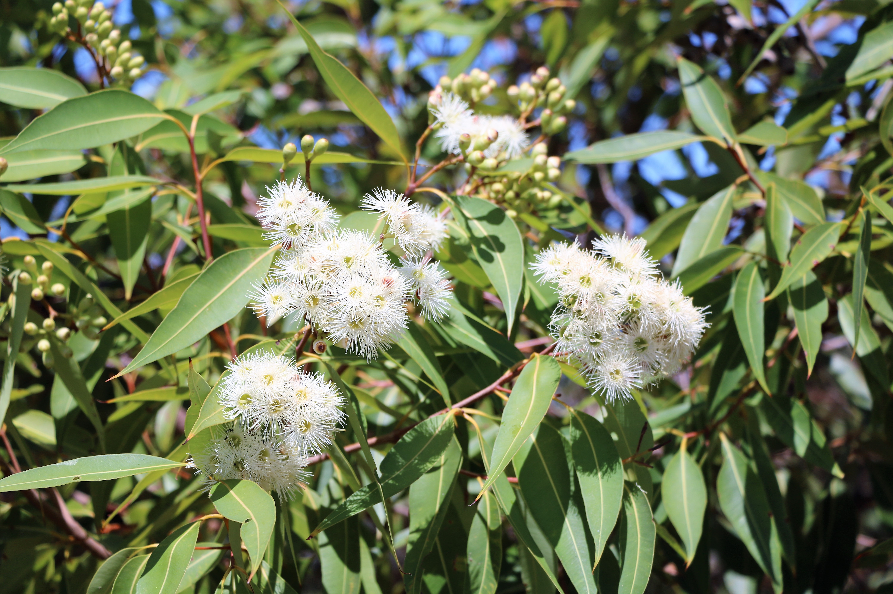

MATERIALS
Our products are made from a carefully chosen selection of sustainable materials. We are considering the whole life cycle of the product when choosing materials, trims and how to combine them. Sustainability and transparency are essentials in the product design, as well as for choosing the materials and suppliers. A detailed material information of every product is available in our web-shop, including material origin & manufacturing country.
Organic cotton
Organic cotton is grown without the use of toxic and persistent pesticides, synthetic fertilizers or insecticides, and GMO-seeds are not allowed. Chemicals used in conventional cotton farming are among the most toxic chemicals classified, and have a tremendous impact on the air, soil and water, as well as the health of farmers, people living in cotton farming areas, factory workers and the development of allergies. Organic cotton farming improves the land quality, prevents water contamination and conserves biodiversity and the health of the entire ecosystem.
We are using The Global Organic Textile Standard (GOTS)-certified organic cotton fabrics. GOTS-certification ensures the organic status of textiles, from harvesting of the raw materials through environmentally and socially responsible manufacturing all the way to labeling in order to provide credible assurance to the end consumer. Read more about GOTS-certification HERE

Tencel
TENCEL™ is a brand name for a wood-based fiber which is also called lyocell, manufactured by the Lenzing AG. It's a strong fabric, which has a beautiful drape and good resistance to wrinkles. Tencel lyocell is regenerated from wood cellulose of eucalyptus trees. It is similar in hand to viscose/rayon and bamboo, both regenerated fabrics.
However, Tencel is one of the most environmentally friendly regenerated fabrics, for several reasons:
Hemp
Cannabis sativa is the scientific name of hemp. It is one of the fastest growing plants and was one of the first plants to be spun into usable fiber. History of hemp fabrics goes way back - archaeologists found a remnant of hemp cloth in ancient Mesopotamia which dates back to 8,000 BC.
Hemp plant demands very little; it grows like weed in small amount of land and requires very little water (approximately 50% less than cotton).
The plant is naturally resistant to pests, so no toxic chemicals or pesticides are used in
cultivating hemp.
Hemp fiber is one of the strongest and most durable of all natural textile fibers. Not only is hemp
strong, but it also holds its shape, stretching less than any other natural fiber. The more hemp is
used, the softer it gets. Hemp doesn't wear out, it wears in. Hemp is also naturally resistant to
mold and ultraviolet light.
Recycled fabrics
Textile waste can be divided into two categories, pre- and post-consumer waste. Mahla Clothing is using both types. This is a very environmental-friendly way, and a good example of practicing circular economy.
Post-consumer waste fabrics
Post-consumer waste is the material and clothing, which the consumer has purchased, most likely worn and then decided to put away.

These can be, e.g. broken, discarded or unwanted clothes and textiles. They are washed, cut apart and then cut again to a new shape and sewn into new products, which gives these textiles a whole new life. Clothing & accessories made from post-consumer waste materials are often unique one-of-a-kind pieces.
Pre-consumer waste fabrics
Pre-consumer waste, also known as post-industrial waste, is the material left over from the garment production. We use several kinds of pre-consumer waste materials in our products, for example cutting leftovers and deadstock fabrics.
Deadstock textiles are materials that are no longer useful for other factories and companies.
These fabrics end up unused for several different reasons; color/textile type is no longer in season, overstock, failure in the dyeing process, or textiles has slight damages that weren't worth cutting around in conventional garment manufacturing process, but can be avoided in a smaller scale production.
Using deadstock fabrics gives us a bigger variety of fabrics available. They are mostly used for making limited editions, small series and unique pieces. The deadstock used are handpicked from several sources, all located in Northern Europe.